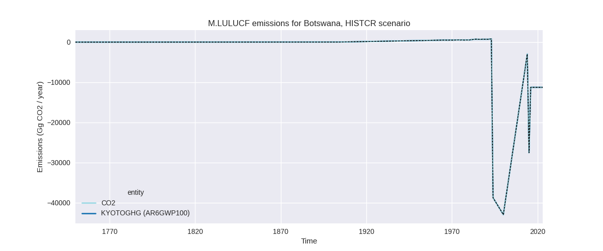

Changes in PRIMAP-hist v2.6.1_final compared to v2.6_final for Botswana
2025-03-19
Johannes Gütschow
Change analysis for Botswana for PRIMAP-hist v2.6.1_final compared to v2.6_final
Overview over emissions by sector and gas
The following figures show the aggregate national total emissions excluding LULUCF AR6GWP100 for the country reported priority scenario. The dotted linesshow the v2.6_final data.


The following figures show the aggregate national total emissions excluding LULUCF AR6GWP100 for the third party priority scenario. The dotted linesshow the v2.6_final data.
Overview over changes
In the country reported priority scenario we have the following changes for aggregate Kyoto GHG and national total emissions excluding LULUCF (M.0.EL):
- Emissions in 2023 have changed by -17.7%% (-4901.89 Gg CO2 / year)
- Emissions in 1990-2023 have changed by -0.1%% (-11.16 Gg CO2 / year)
In the third party priority scenario we have the following changes for aggregate Kyoto GHG and national total emissions excluding LULUCF (M.0.EL):
- Emissions in 2023 have changed by -18.8%% (-4959.44 Gg CO2 / year)
- Emissions in 1990-2023 have changed by -1.1%% (-168.59 Gg CO2 / year)
Most important changes per scenario and time frame
In the country reported priority scenario the following sector-gas combinations have the highest absolute impact on national total KyotoGHG (AR6GWP100) emissions in 2023 (top 5):
- 1: M.AG.ELV, CH4 with -3010.72 Gg CO2 / year (-37.9%)
- 2: M.AG.ELV, N2O with -2805.19 Gg CO2 / year (-36.7%)
- 3: 1.A, N2O with 517.72 Gg CO2 / year (822.0%)
- 4: 1.B.1, CH4 with 149.22 Gg CO2 / year (41.1%)
- 5: 3.A, CH4 with 119.19 Gg CO2 / year (8.0%)
In the country reported priority scenario the following sector-gas combinations have the highest absolute impact on national total KyotoGHG (AR6GWP100) emissions in 1990-2023 (top 5):
- 1: 1.A, N2O with 157.61 Gg CO2 / year (290.7%)
- 2: M.AG.ELV, CH4 with -104.14 Gg CO2 / year (-3.1%)
- 3: M.AG.ELV, N2O with -80.70 Gg CO2 / year (-2.0%)
- 4: 1.B.1, CH4 with 8.98 Gg CO2 / year (2.7%)
- 5: 3.A, CH4 with 8.38 Gg CO2 / year (0.4%)
In the third party priority scenario the following sector-gas combinations have the highest absolute impact on national total KyotoGHG (AR6GWP100) emissions in 2023 (top 5):
- 1: M.AG.ELV, CH4 with -3010.72 Gg CO2 / year (-37.9%)
- 2: M.AG.ELV, N2O with -2805.19 Gg CO2 / year (-36.7%)
- 3: 1.A, N2O with 517.72 Gg CO2 / year (822.0%)
- 4: 1.B.1, CH4 with 368.60 Gg CO2 / year (44.7%)
- 5: 4, CH4 with -237.05 Gg CO2 / year (-34.4%)
In the third party priority scenario the following sector-gas combinations have the highest absolute impact on national total KyotoGHG (AR6GWP100) emissions in 1990-2023 (top 5):
- 1: 4, CH4 with -183.54 Gg CO2 / year (-39.6%)
- 2: 1.A, N2O with 157.61 Gg CO2 / year (290.7%)
- 3: M.AG.ELV, CH4 with -104.14 Gg CO2 / year (-3.1%)
- 4: M.AG.ELV, N2O with -80.70 Gg CO2 / year (-2.0%)
- 5: 1.B.1, CH4 with 37.13 Gg CO2 / year (6.2%)
Notes on data changes
Here we list notes explaining important emissions changes for the country.
- No new country reported data for Botswana has been included.
- The high decrease in 2023 emission for M.AG.ELV (CR, TP) comes from a drop in emission in 2022 in the new FAO data.
- The high increase in N2O from 1.A (CR, TP) for 2023 and cumulative emissions comes from the new EDGAR data.
- Waste CH4 has almost 40% lower cumulative emissions in the TP scenario due to the updated EDGAR data.
Changes by sector and gas
For each scenario and time frame the changes are displayed for all individual sectors and all individual gases. In the sector plot we use aggregate Kyoto GHGs in AR6GWP100. In the gas plot we usenational total emissions without LULUCF.
country reported scenario
2023
1990-2023
third party scenario
2023
1990-2023
Detailed changes for the scenarios:
country reported scenario (HISTCR):
Most important changes per time frame
For 2023 the following sector-gas combinations have the highest absolute impact on national total KyotoGHG (AR6GWP100) emissions in 2023 (top 5):
- 1: M.AG.ELV, CH4 with -3010.72 Gg CO2 / year (-37.9%)
- 2: M.AG.ELV, N2O with -2805.19 Gg CO2 / year (-36.7%)
- 3: 1.A, N2O with 517.72 Gg CO2 / year (822.0%)
- 4: 1.B.1, CH4 with 149.22 Gg CO2 / year (41.1%)
- 5: 3.A, CH4 with 119.19 Gg CO2 / year (8.0%)
For 1990-2023 the following sector-gas combinations have the highest absolute impact on national total KyotoGHG (AR6GWP100) emissions in 1990-2023 (top 5):
- 1: 1.A, N2O with 157.61 Gg CO2 / year (290.7%)
- 2: M.AG.ELV, CH4 with -104.14 Gg CO2 / year (-3.1%)
- 3: M.AG.ELV, N2O with -80.70 Gg CO2 / year (-2.0%)
- 4: 1.B.1, CH4 with 8.98 Gg CO2 / year (2.7%)
- 5: 3.A, CH4 with 8.38 Gg CO2 / year (0.4%)
Changes in the main sectors for aggregate KyotoGHG (AR6GWP100) are
- 1: Total sectoral emissions in 2022 are 10043.59 Gg
CO2 / year which is 45.0% of M.0.EL emissions. 2023 Emissions have
changed by 7.0% (674.83 Gg CO2 /
year). 1990-2023 Emissions have changed by 2.9% (168.05 Gg CO2 / year). For 2023 the
changes per gas
are:
For 1990-2023 the changes per gas are:
The changes come from the following subsectors:- 1.A: Total sectoral emissions in 2022 are 9519.29
Gg CO2 / year which is 94.8% of category 1 emissions. 2023 Emissions
have changed by 5.6% (517.80 Gg CO2
/ year). 1990-2023 Emissions have changed by 2.9% (158.65 Gg CO2 / year). For 2023 the
changes per gas
are:
For 1990-2023 the changes per gas are:
There is no subsector information available in PRIMAP-hist. - 1.B.1: Total sectoral emissions in 2022 are 524.30
Gg CO2 / year which is 5.2% of category 1 emissions. 2023 Emissions have
changed by 41.3% (157.03 Gg CO2 /
year). 1990-2023 Emissions have changed by 2.8% (9.40 Gg CO2 / year). For 2023 the
changes per gas
are:
For 1990-2023 the changes per gas are:
There is no subsector information available in PRIMAP-hist.
- 1.A: Total sectoral emissions in 2022 are 9519.29
Gg CO2 / year which is 94.8% of category 1 emissions. 2023 Emissions
have changed by 5.6% (517.80 Gg CO2
/ year). 1990-2023 Emissions have changed by 2.9% (158.65 Gg CO2 / year). For 2023 the
changes per gas
are:
- 2: Total sectoral emissions in 2022 are 487.76 Gg CO2 / year which is 2.2% of M.0.EL emissions. 2023 Emissions have changed by -0.2% (-1.11 Gg CO2 / year). 1990-2023 Emissions have changed by -0.3% (-0.61 Gg CO2 / year).
- M.AG: Total sectoral emissions in 2022 are 11342.49
Gg CO2 / year which is 50.8% of M.0.EL emissions. 2023 Emissions have
changed by -33.3% (-5696.26 Gg CO2 /
year). 1990-2023 Emissions have changed by -1.8% (-176.45 Gg CO2 / year). For 2023
the changes per gas
are:
The changes come from the following subsectors:- 3.A: Total sectoral emissions in 2022 are 1657.06
Gg CO2 / year which is 14.6% of category M.AG emissions. 2023 Emissions
have changed by 8.0% (119.64 Gg CO2
/ year). 1990-2023 Emissions have changed by 0.4% (8.39 Gg CO2 / year). For 2023 the
changes per gas
are:
There is no subsector information available in PRIMAP-hist. - M.AG.ELV: Total sectoral emissions in 2022 are
9685.42 Gg CO2 / year which is 85.4% of category M.AG emissions. 2023
Emissions have changed by -37.3%
(-5815.90 Gg CO2 / year). 1990-2023 Emissions have changed by -2.5% (-184.85 Gg CO2 / year). For 2023
the changes per gas
are:
For 1990-2023 the changes per gas are:
There is no subsector information available in PRIMAP-hist.
- 3.A: Total sectoral emissions in 2022 are 1657.06
Gg CO2 / year which is 14.6% of category M.AG emissions. 2023 Emissions
have changed by 8.0% (119.64 Gg CO2
/ year). 1990-2023 Emissions have changed by 0.4% (8.39 Gg CO2 / year). For 2023 the
changes per gas
are:
- 4: Total sectoral emissions in 2022 are 211.80 Gg
CO2 / year which is 0.9% of M.0.EL emissions. 2023 Emissions have
changed by 3.5% (7.28 Gg CO2 /
year). 1990-2023 Emissions have changed by -0.1% (-0.26 Gg CO2 / year). For 2023 the
changes per gas
are:
- 5: Total sectoral emissions in 2022 are 241.95 Gg
CO2 / year which is 1.1% of M.0.EL emissions. 2023 Emissions have
changed by 41.6% (113.38 Gg CO2 /
year). 1990-2023 Emissions have changed by -1.0% (-1.88 Gg CO2 / year). For 2023 the
changes per gas
are:
third party scenario (HISTTP):
Most important changes per time frame
For 2023 the following sector-gas combinations have the highest absolute impact on national total KyotoGHG (AR6GWP100) emissions in 2023 (top 5):
- 1: M.AG.ELV, CH4 with -3010.72 Gg CO2 / year (-37.9%)
- 2: M.AG.ELV, N2O with -2805.19 Gg CO2 / year (-36.7%)
- 3: 1.A, N2O with 517.72 Gg CO2 / year (822.0%)
- 4: 1.B.1, CH4 with 368.60 Gg CO2 / year (44.7%)
- 5: 4, CH4 with -237.05 Gg CO2 / year (-34.4%)
For 1990-2023 the following sector-gas combinations have the highest absolute impact on national total KyotoGHG (AR6GWP100) emissions in 1990-2023 (top 5):
- 1: 4, CH4 with -183.54 Gg CO2 / year (-39.6%)
- 2: 1.A, N2O with 157.61 Gg CO2 / year (290.7%)
- 3: M.AG.ELV, CH4 with -104.14 Gg CO2 / year (-3.1%)
- 4: M.AG.ELV, N2O with -80.70 Gg CO2 / year (-2.0%)
- 5: 1.B.1, CH4 with 37.13 Gg CO2 / year (6.2%)
Changes in the main sectors for aggregate KyotoGHG (AR6GWP100) are
- 1: Total sectoral emissions in 2022 are 8853.54 Gg
CO2 / year which is 42.3% of M.0.EL emissions. 2023 Emissions have
changed by 11.0% (894.22 Gg CO2 /
year). 1990-2023 Emissions have changed by 3.6% (196.20 Gg CO2 / year). For 2023 the
changes per gas
are:
For 1990-2023 the changes per gas are:
The changes come from the following subsectors:- 1.A: Total sectoral emissions in 2022 are 7663.93
Gg CO2 / year which is 86.6% of category 1 emissions. 2023 Emissions
have changed by 7.1% (517.80 Gg CO2
/ year). 1990-2023 Emissions have changed by 3.3% (158.65 Gg CO2 / year). For 2023 the
changes per gas
are:

For 1990-2023 the changes per gas are:
There is no subsector information available in PRIMAP-hist. - 1.B.1: Total sectoral emissions in 2022 are 1189.61
Gg CO2 / year which is 13.4% of category 1 emissions. 2023 Emissions
have changed by 44.7% (376.41 Gg CO2
/ year). 1990-2023 Emissions have changed by 6.2% (37.54 Gg CO2 / year). For 2023 the
changes per gas
are:
For 1990-2023 the changes per gas are:
There is no subsector information available in PRIMAP-hist.
- 1.A: Total sectoral emissions in 2022 are 7663.93
Gg CO2 / year which is 86.6% of category 1 emissions. 2023 Emissions
have changed by 7.1% (517.80 Gg CO2
/ year). 1990-2023 Emissions have changed by 3.3% (158.65 Gg CO2 / year). For 2023 the
changes per gas
are:
- 2: Total sectoral emissions in 2022 are 487.76 Gg CO2 / year which is 2.3% of M.0.EL emissions. 2023 Emissions have changed by -0.2% (-1.11 Gg CO2 / year). 1990-2023 Emissions have changed by -0.3% (-0.61 Gg CO2 / year).
- M.AG: Total sectoral emissions in 2022 are 10877.49
Gg CO2 / year which is 52.0% of M.0.EL emissions. 2023 Emissions have
changed by -34.4% (-5729.82 Gg CO2 /
year). 1990-2023 Emissions have changed by -1.9% (-178.81 Gg CO2 / year). For 2023
the changes per gas
are:
The changes come from the following subsectors:- 3.A: Total sectoral emissions in 2022 are 1192.07
Gg CO2 / year which is 11.0% of category M.AG emissions. 2023 Emissions
have changed by 8.0% (86.08 Gg CO2 /
year). 1990-2023 Emissions have changed by 0.3% (6.04 Gg CO2 / year). For 2023 the
changes per gas
are:
There is no subsector information available in PRIMAP-hist. - M.AG.ELV: Total sectoral emissions in 2022 are
9685.42 Gg CO2 / year which is 89.0% of category M.AG emissions. 2023
Emissions have changed by -37.3%
(-5815.90 Gg CO2 / year). 1990-2023 Emissions have changed by -2.5% (-184.85 Gg CO2 / year). For 2023
the changes per gas
are:

For 1990-2023 the changes per gas are:
There is no subsector information available in PRIMAP-hist.
- 3.A: Total sectoral emissions in 2022 are 1192.07
Gg CO2 / year which is 11.0% of category M.AG emissions. 2023 Emissions
have changed by 8.0% (86.08 Gg CO2 /
year). 1990-2023 Emissions have changed by 0.3% (6.04 Gg CO2 / year). For 2023 the
changes per gas
are:
- 4: Total sectoral emissions in 2022 are 473.16 Gg
CO2 / year which is 2.3% of M.0.EL emissions. 2023 Emissions have
changed by -32.7% (-236.10 Gg CO2 /
year). 1990-2023 Emissions have changed by -37.7% (-183.48 Gg CO2 / year). For 2023
the changes per gas
are:
For 1990-2023 the changes per gas are: - 5: Total sectoral emissions in 2022 are 241.95 Gg
CO2 / year which is 1.2% of M.0.EL emissions. 2023 Emissions have
changed by 41.6% (113.38 Gg CO2 /
year). 1990-2023 Emissions have changed by -1.0% (-1.88 Gg CO2 / year). For 2023 the
changes per gas
are: